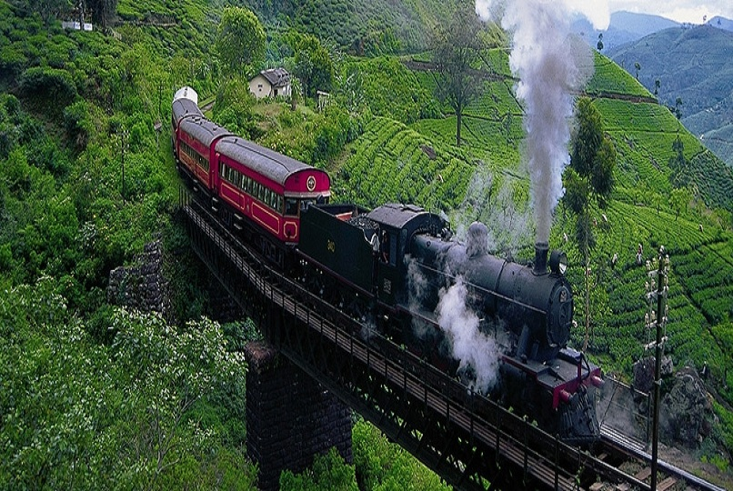
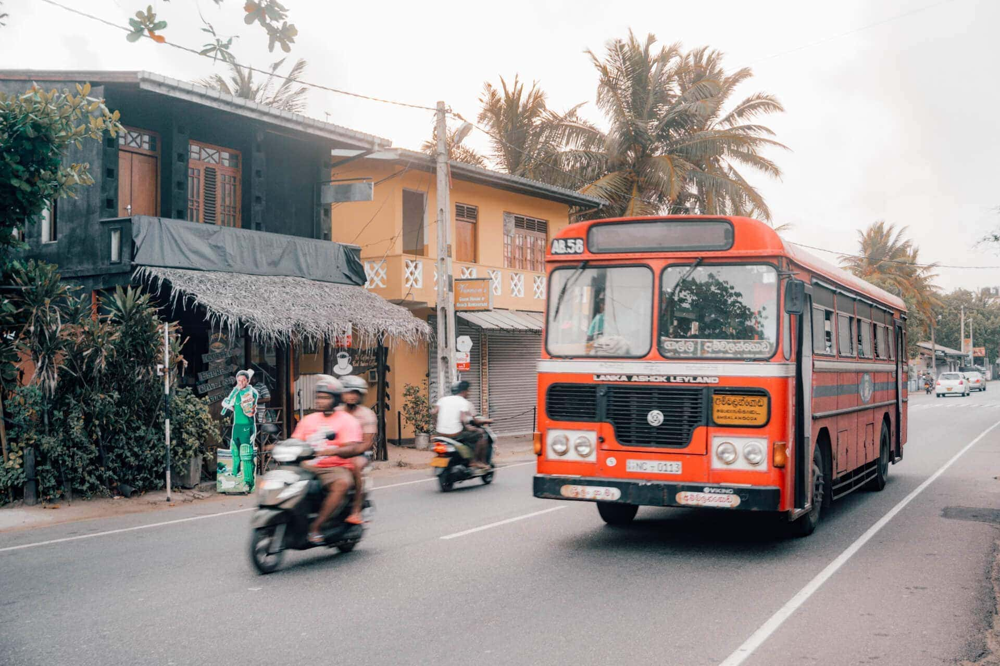
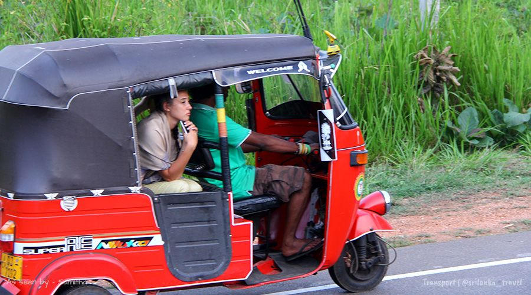
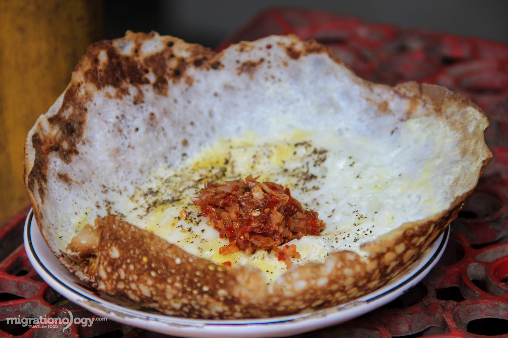
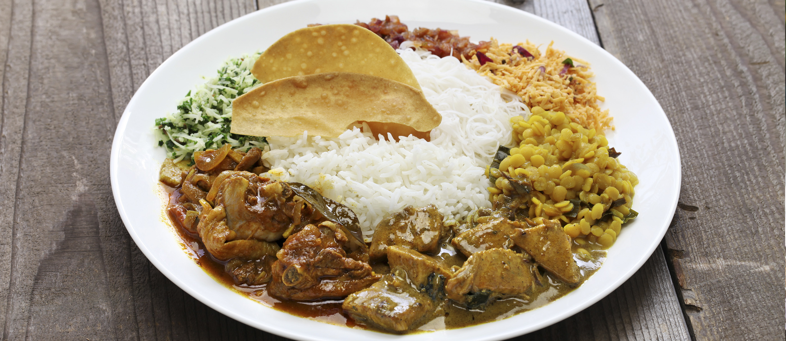
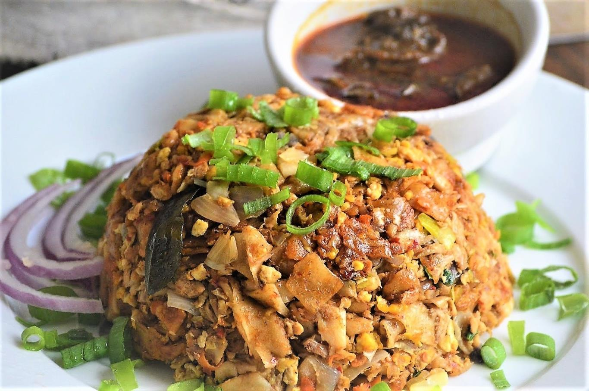
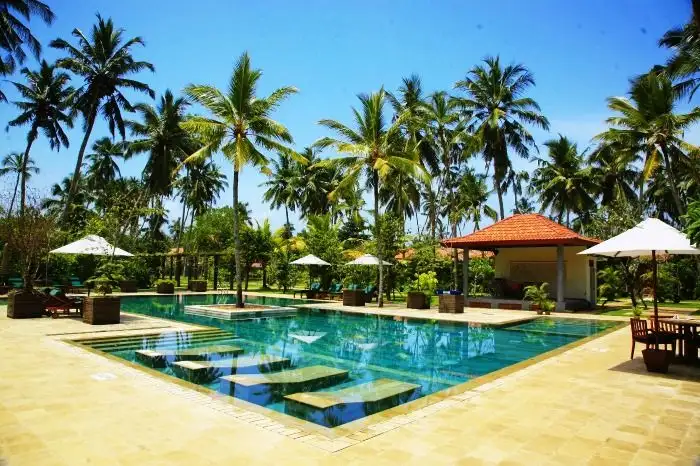
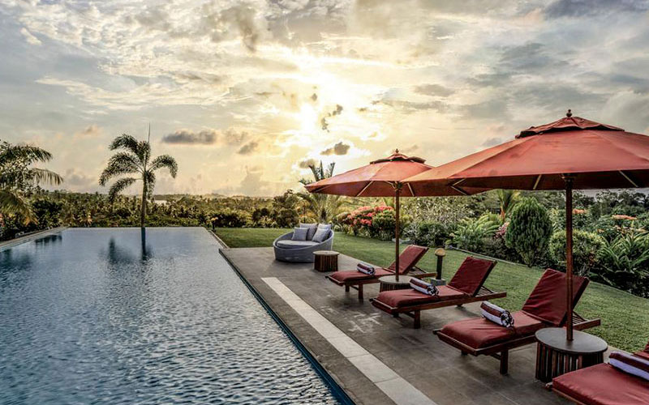
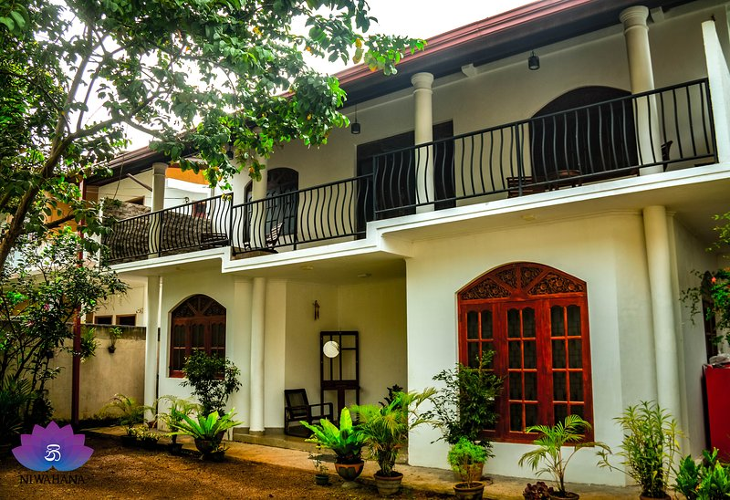

SoloTravel
When we going on a trip individually we need to maintain a budjet. Budjet must include:
01. Transportation
Sri Lanka has an extensive network of public buses connecting major cities and towns. This is one of the most affordable ways to travel around the country.
The Sri Lankan railway network offers scenic train rides, especially the route from Colombo to Kandy and Ella. Trains are relatively cheap and provide a comfortable travel experience.
Tuk-tuks, or three-wheeler taxis, are a convenient mode of transportation for short distances within cities or towns. Negotiate the fare before starting your journey.
Renting a car or scooter gives you the flexibility to explore off-the-beaten-path destinations at your own pace. Make sure you have a valid international driving permit if you plan to drive.
If you prefer not to drive yourself, you can hire a private driver for a day or for the duration of your trip. This option provides convenience and allows you to relax while someone else navigates the roads.



02. Food
Sri Lankan cuisine is diverse and flavorful, with influences from Indian, Dutch, Portuguese, and Malay cuisines. Try traditional dishes like rice and curry, string hoppers, kottu roti, and hoppers.
Explore local markets and street food stalls for inexpensive and delicious snacks such as samosas, roti, and seafood.
There are plenty of restaurants catering to both local and international tastes in Sri Lanka's cities and tourist areas. Look for eateries serving fresh seafood, vegetarian dishes, and international cuisine.
Take advantage of Sri Lanka's abundance of tropical fruits like mangoes, pineapples, papayas, and bananas, which you can find at roadside stalls and markets.
Join a cooking class to learn how to prepare authentic Sri Lankan dishes using local ingredients. It's a fun way to immerse yourself in the culture and bring home new recipes.



03. Accomodation
Guesthouses are a popular accommodation option for budget travelers in Sri Lanka. They offer affordable rooms with basic amenities and often provide a more personalized experience than larger hotels.
Hostels are a great choice for solo travelers looking to meet other like-minded individuals. Many hostels in Sri Lanka offer dormitory-style accommodation as well as private rooms at budget-friendly rates.
For a more upscale experience, consider staying at a boutique hotel or guesthouse. These smaller establishments often have unique decor, personalized service, and a cozy atmosphere.
Sri Lanka's coastline is dotted with luxurious beach resorts offering stunning ocean views, spa facilities, and recreational activities like snorkeling and surfing.
Experience authentic Sri Lankan hospitality by staying with a local family in a homestay. This option allows you to immerse yourself in the culture, learn about traditional customs, and enjoy home-cooked meals.


